Supervised learning using non-parametric discriminative models in pmtk3
Contents
Kernel functions
One common form of basis function expansion is to define a new feature vector 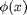 by comparing the input 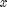 to a set of prototypes or examplars 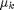 as follows:
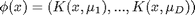
Here 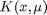 is a 'kernel function', which in this context just means a function of two arguments. A common example is the Gaussian or RBF kernel
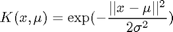
where is the 'bandwidth'. This can be created using kernelRbfSigma.m . Alternatively, we can write
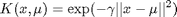
The quantity 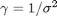 is known as the scale or precision. This can be created using kernelRbfGamma.m . Most software packages use this latter parameterization.
Another common example is the polynomial kernel kernelPolyPmtk.m :
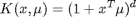
where d is the degree.
Another common example is the linear kernel kernelLinearPmtk.m :

(The reason for the 'pmtk' suffix is to distinguish these functions from other implementations of the same concept.)
Often we take the prototypes to be the training vectors (rows of 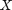), but we don't have to. Some methods require that the kernel be a Mercer (positive definite) kernel. All of the above kernels are Mercer kernels, but this is not always the case.
The advantages of using kernels include the following
- We can apply standard parametric models (e.g., linear and logistic regression) to non-vectorial inputs (e.g., strings, molecular structures, etc.), by defining to be some kind of function for comparing structured inputs.
- We can increase the flexibility of the model by working in an enlarged feature space.
Below we show an example where we fit the XOR data using kernelized logistic regression, with various kernels and prototypes (from logregXorDemo.m ).
clear all; close all [X, y] = createXORdata(); rbfSigma = 1; polydeg = 2; protoTypes = [1 1; 1 5; 5 1; 5 5]; protoTypesStnd = standardizeCols(protoTypes); kernels = {@(X1, X2)kernelRbfSigma(X1, protoTypesStnd, rbfSigma) @(X1, X2)kernelRbfSigma(X1, X2, rbfSigma) @(X1, X2)kernelPolyPmtk(X1, X2, polydeg)}; titles = {'rbf', 'rbf prototypes', 'poly'}; for i=1:numel(kernels) preproc = preprocessorCreate('kernelFn', kernels{i}, 'standardizeX', true, 'addOnes', true); model = logregFit(X, y, 'preproc', preproc); yhat = logregPredict(model, X); errorRate = mean(yhat ~= y); fprintf('Error rate using %s features: %2.f%%\n', titles{i}, 100*errorRate); predictFcn = @(Xtest)logregPredict(model, Xtest); plotDecisionBoundary(X, y, predictFcn); if i==1 hold on; plot(protoTypes(:, 1), protoTypes(:, 2), '*k', 'linewidth', 2, 'markersize', 10) end title(titles{i}); end
Error rate using rbf features: 0% Error rate using rbf prototypes features: 0% Error rate using poly features: 0%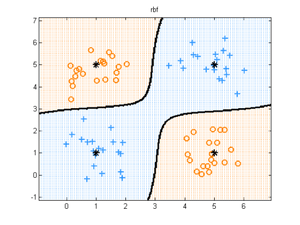 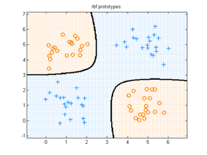 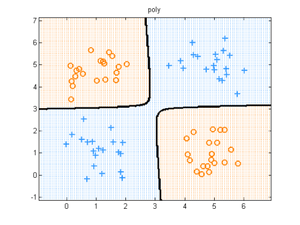
In the first example, we use an RBF kernel with centers at 4 manually chosen points, shown with black stars. In the second and third examples, we use an RBF and polynomial kernel, centered at all the training data. This is an example of a non-parametric model, since the number of parameters grows with the size of the training set (which makes training slow on large datasets). We can use sparsity promoting priors to select a subset of the training data, as we illustrate below.
Using grid search plus cross validation to choose the kernel parameters
We can create a grid of models, with different kernels and different regularizers, as shown in the example below ( from logregKernelDemo.m ). If CV does not pick a point on the edge of the grid, we can be faily confident we have searched over a reasonable range. For this reason, it is helpful to plot the cost surface.
loadData('fglass'); % 6 classes, X is 214*9 X = [Xtrain; Xtest]; y = canonizeLabels([ytrain; ytest]); % class 4 is missing, so relabel 1:6 setSeed(0); split = 0.7; [X, y] = shuffleRows(X, y); X = rescaleData(standardizeCols(X)); N = size(X, 1); nTrain = floor(split*N); nTest = N - nTrain; Xtrain = X(1:nTrain, :); Xtest = X(nTrain+1:end, :); ytrain = y(1:nTrain); ytest = y(nTrain+1:end); % 2D CV lambdaRange = logspace(-6, 1, 5); gammaRange = logspace(-4, 4, 5); paramRange = crossProduct(lambdaRange, gammaRange); regtypes = {'L2'}; %L1 is a bit better but a bit slower for r=1:length(regtypes) regtype = regtypes{r}; fitFn = @(X, y, param)... logregFit(X, y, 'lambda', param(1), 'regType', regtype, 'preproc', ... preprocessorCreate('kernelFn', @(X1, X2)kernelRbfGamma(X1, X2, param(2)))); predictFn = @logregPredict; lossFn = @(ytest, yhat)mean(yhat ~= ytest); nfolds = 5; useSErule = true; plotCv = true; tic; [LRmodel, bestParam, LRmu, LRse] = ... fitCv(paramRange, fitFn, predictFn, lossFn, Xtrain, ytrain, nfolds, ... 'useSErule', useSErule, 'doPlot', plotCv, 'params1', lambdaRange, 'params2', gammaRange); time(r) = toc yhat = logregPredict(LRmodel, Xtest); nerrors(r) = sum(yhat ~= ytest); end errRate = nerrors/nTest
time =
31.2589
errRate =
0.4154
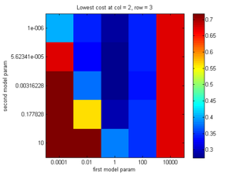 In the example above, we just use a 5x5 grid for speed, but in practice one might use a 10x10 grid for a coarse search (possibly on a subset of the data), followed by a more refined search in a promising part of hyper-parameter space. This could all be handed off to a generic discrete optimization algorithm, but this is not yet supported. (One big advantage of Gaussian processes, which we will discuss later, is that we can use continous optimization algorithms to tune the kernel parameters.)
Sparse multinomial logistic regression (SMLR)
We can select a subset of the training examples by using an L1 regularizer. This is called Sparse multinomial logistic regression (SMLR). If we use an L2 regularizer instead of L1, we call the method 'ridged multinomial logistic regression' or RMLR. (This terminology is from the paper "Learning sparse Bayesian classifiers: multi-class formulation, fast algorithms, and generalization bounds", Krishnapuram et al, PAMI 2005.)
One way to implement smlrFit.m is to kernelize the data, and then pick the best lambda on the regularization path using logregFitPathCv.m (which uses glmnet). Another way is call fitCv.m , which lets us use a different kernel basis for each fold. This is much slower but gives much better results. See smlrPathDemo.m for a comparison of these two approaches.
To fit an SMLR model with an RBF kernel, and to cross validate over lambdaRange, use
model = smlrFit(X,y, 'kernelFn', @(X1, X2)kernelRbfGamma(X1, X2, gamma), ... 'regType', 'L1', 'lambdaRange', lambdaRange)
regType defaults to 'L1', and lambdaRange defaults to logspace(-5, 2, 10), so both these parameters can be omitted. The kernelFn is mandatory, however. After fitting, use smlrPredict.m to predict.
Relevance vector machines (RVM)
An alternative approach to achieving sparsity is to use automatic relevance determination (ARD). The combination of kernel basis function expansion and ARD is known as the relevance vector machine (RVM). This can be used for classification or regression.
One way to fit an RVM (implemented in rvmSimpleFit.m ) is to use kernel basis expansion followed by the ARD fitting feature in linregFitBayes.m ; however, this is rather slow. Instead, rvmFit.m provides a wrapper to Mike Tipping's SparseBayes 2.0 Matlab library, which implements a greedy algorithm that adds basis functions one at a time.
To fit an RVM with an RBF kernel, use
model = rvmFit(X,y, 'kernelFn', @(X1, X2)kernelRbfGamma(X1, X2, gamma))
There is no need to specify lambdaRange, since the method uses ARD to estimate the hyper-parameters. After fitting, use rvmPredict.m to predict.
Currently Tipping's package does not support multi-class classification. Therefore we convert the base binary classifier into a multi-class one using oneVsRestClassifFit.m . This is done internally by rvmFit.m .
Support vector machines (SVM)
SVMs are a very popular form of non-probabilistic kernelized discriminative classifier. They achieve sparsity not by using a sparsity-promoting prior, but instead by using a hinge loss function when training.
svmFit.m (which handles multi-class classification and regression) is a wrapper to several different implementations of SVMs:
The appropriate library is determined automatically based on the type of kernel, as follows: If you use a linear kernel, it calls liblinear; if you use an RBF kernel, it calls libsvm; if you use an arbitrary kernel (eg. a string kernel), it calls our QP code. (Thus it never calls svmlight by default, since libsvm seems to be much faster.)
The function svmFitTest.m checks that all these implementations give the same results, up to numerical error. (This should be the case since the objective is convex; however, some packages only solve the problem to a very low precision.)
svmFit.m calls fitCv.m internally to choose the appropriate regularization constant 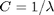. It can also choose the best kernel parameter. Here is an example of the calling syntax.
model = svmFit(Xtrain, ytrain, 'C', logspace(-5, 1, 10),... 'kernel', 'rbf', 'kernelParam', logspace(-2,2,5));
After fitting, use svmPredict.m to predict.
Comparison of SVM, RVM, SMLR
Let us compare various kernelized classifiers. Below we show the characteristics of some data sets to which we will apply the various classifiers. Colon and AML/ALL are gene microarray datasets, which is why the number of features is so large. Soy and forensic glass are standard datasets from the UCI repository. (All data is locally stored in pmtkdata.)
| nClasses | nFeatures | nTrain | nTest | |
|---|---|---|---|---|
| crabs | 2 | 5 | 140 | 60 |
| iris | 3 | 4 | 105 | 45 |
| bankruptcy | 2 | 2 | 46 | 20 |
| pima | 2 | 7 | 140 | 60 |
| soy | 3 | 35 | 214 | 93 |
| Fglass | 6 | 9 | 149 | 65 |
| colon | 2 | 2000 | 43 | 19 |
| AML/ALL | 2 | 7129 | 50 | 22 |
In classificationShootout.m we compare SVM, RVM, SMLR and RMLR on the lowdim datasets using RBF kernels. For each split, we use 70% of the data for training and 30% for testing. Cross validation on the training set is then used internally, if necessary, to tune the regularization parameter. The results are shown below. (This table is modelled after Table 2 of Learning sparse Bayesian classifiers: multi-class formulation, fast algorithms, and generalization bounds, Krishnapuram et al, PAMI 2005.) We show the total number of misclassifications, and in brackets, the total number of retained kernel basis functions (- means not computed). The bottom row shows the total number of test cases, and the total number of possible basis functions, which is 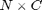.
| Crabs | Iris | Bankruptcy | Pima | Soy | Fglass | train(minutes) | test(seconds) | |
|---|---|---|---|---|---|---|---|---|
| SVM | 4 (40) | 4 (32) | 2 (12) | 15 (81) | 7 (96) | 25 (99) | 7.3 | 0.024 |
| RVM | 6 (8) | 5 (12) | 2 (2) | 13 (3) | 9 (31) | 23 (67) | 38 | 0.013 |
| SMLR | 2 (140) | 5 (210) | 1 (46) | 14 (140) | 9 (400) | 22 (730) | 2.5e+002 | 0.01 |
| RMLR | 3 (280) | 6 (315) | 1 (92) | 16 (280) | 7 (642) | 23 (894) | 48 | 0.0097 |
| Out of | 60 (280) | 45 (315) | 20 (92) | 60 (280) | 93 (642) | 65 (894) |
The training time above is total time in minutes, including cross validation. But beware, we are comparing apples with oranges here, since the packages are in different langauges:
- svm is a wrapper to C code (libsvm)
- rvm is optimized Matlab (SparseBayes)
- SMLR and RMLR is unoptimized Matlab (very slow).
The total time to make the above table is about 8 hours! Since it is very slow to cross validate over the kernel bandwidth 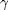 and the regularization penalty 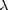, we made a faster version of this demo, called classificationShootoutCvLambdaOnly.m Here we first picked using CV for an SVM; we then used this same kernel parameter for all methods. (For the high dimensional datasets, we used a linear kernel.) The results are shown below. We see that performance is worse than using CV to pick the RBF param for each method separately.
| Crabs | Iris | Bankruptcy | Pima | Soy | Fglass | colon (linear) | amlAll (linear) | train(seconds) | test(seconds) | |
|---|---|---|---|---|---|---|---|---|---|---|
| SVM | 6 (106) | 5 (25) | 2 (17) | 16 (87) | 5 (143) | 24 (120) | 5 (0) | 8 (0) | 32 | 0.078 |
| RVM | 5 (6) | 5 (8) | 2 (2) | 22 (1) | 7 (32) | 36 (28) | 3 (3) | 4 (1) | 4.2 | 0.047 |
| SMLR | 3 (140) | 5 (209) | 2 (39) | 13 (140) | 7 (376) | 25 (743) | 3 (28) | 5 (49) | 4.8e+002 | 0.029 |
| RMLR | 3 (280) | 5 (315) | 2 (92) | 15 (280) | 7 (642) | 22 (894) | 8 (86) | 4 (100) | 1.1e+002 | 0.028 |
| Out of | 60 (280) | 45 (315) | 20 (92) | 60 (280) | 93 (642) | 65 (894) | 19 (86) | 22 (100) |
In the spirit of reproducible research, we created a simpler demo, called linearKernelDemo.m , which only uses linear kernels (so we don't have to cross validate over gamma in the RBF kernel) and only runs on a few datasets. This is much faster, allowing us to perform multiple trials. Below we show the median misclassification rates on the different data sets, averaged over 3 random splits. We also added logregL1path and logregL2path to the mix; these are written in Fortran (glmnet). The results are shown below.
| test error rate (median over 3 trials) | ||||||
|---|---|---|---|---|---|---|
| SVM | RVM | SMLR | RMLR | logregL2 | logregL1 | |
| soy | 0.108 | 0.108 | 0.118 | 0.129 | 0.710 | 0.108 |
| fglass | 0.477 | 0.554 | 0.400 | 0.431 | 0.708 | 0.492 |
| colon | 0.211 | 0.211 | 0.158 | 0.211 | 0.316 | 0.211 |
| amlAll | 0.455 | 0.227 | 0.136 | 0.182 | 0.364 | 0.182 |
Before reading too much into these results, let's look at the boxplots, which show that the differences are probably not signficant (we don't plot L2 lest it distort the scale)

Below are the training times in seconds (median over 3 trials)
| training time in seconds (median over 3 trials) | ||||||
|---|---|---|---|---|---|---|
| SVM | RVM | SMLR | RMLR | logregL2 | logregL1 | |
| soy | 0.566 | 0.549 | 43.770 | 24.193 | 0.024 | 0.720 |
| fglass | 0.586 | 0.146 | 67.552 | 30.204 | 0.043 | 0.684 |
| colon | 1.251 | 0.028 | 2.434 | 2.618 | 0.021 | 0.418 |
| amlAll | 3.486 | 0.017 | 2.337 | 2.569 | 0.097 | 1.674 |
And here are the boxplots

We see that the RVM is consistently the fastest. which is somewhat surprising since the SVM code is in C. However, the SVM needs to use cross validation, whereas RVM uses empirical Bayes.
Reproducing the above results using linearKernelDemo.m takes about 10 minutes (on my laptop). However, we can run a simplified version of the demo, which only uses 1 random fold, and only uses the last two datasets (with smaller sample size). This just takes 20 seconds, so makes a suitable demo for publishing.
clear all tic split = 0.7; d = 1; loadData('colon') % 2 class, X is 62*2000 dataSets(d).X = X; dataSets(d).y = y; dataSets(d).name = 'colon'; d=d+1; loadData('amlAll'); % 2 class, X is 72*7129 X = [Xtrain; Xtest]; y = [ytrain; ytest]; dataSets(d).X = X; dataSets(d).y = y; dataSets(d).name = 'amlAll'; d=d+1; dataNames = {dataSets.name}; nDataSets = numel(dataSets); methods = {'SVM', 'RVM', 'SMLR', 'RMLR', 'logregL2path', 'logregL1path'}; nMethods = numel(methods); for d=1:nDataSets X = dataSets(d).X; y = dataSets(d).y; setSeed(0); s=1; [X, y] = shuffleRows(X, y); X = rescaleData(standardizeCols(X)); N = size(X, 1); nTrain = floor(split*N); nTest = N - nTrain; Xtrain = X(1:nTrain, :); Xtest = X(nTrain+1:end, :); ytrain = y(1:nTrain); ytest = y(nTrain+1:end); for m=1:nMethods method = methods{m}; switch lower(method) case 'svm' Crange = logspace(-6, 1, 20); % if too small, libsvm crashes! model = svmFit(Xtrain, ytrain, 'C', Crange, 'kernel', 'linear'); predFn = @(m,X) svmPredict(m,X); case 'rvm' model = rvmFit(Xtrain, ytrain, 'kernelFn', @kernelLinear); predFn = @(m,X) rvmPredict(m,X); case 'smlr' model = smlrFit(Xtrain, ytrain, 'kernelFn', @kernelLinear); predFn = @(m,X) smlrPredict(m,X); case 'smlrpath' model = smlrFit(Xtrain, ytrain, 'kernelFn', @kernelLinear, 'usePath', 1); predFn = @(m,X) smlrPredict(m,X); case 'rmlr' model = smlrFit(Xtrain, ytrain, 'kernelFn', @kernelLinear, ... 'regtype', 'L2'); predFn = @(m,X) smlrPredict(m,X); case 'rmlrpath' model = smlrFit(Xtrain, ytrain, 'kernelFn', @kernelLinear, ... 'regtype', 'L2', 'usePath', 1); predFn = @(m,X) smlrPredict(m,X); case 'logregl2path' model = logregFitPathCv(Xtrain, ytrain, 'regtype', 'L2'); predFn = @(m,X) logregPredict(m,X); case 'logregl1path' model = logregFitPathCv(Xtrain, ytrain, 'regtype', 'L1'); predFn = @(m,X) logregPredict(m,X); end saveModel{d,m,s} = model; yHat = predFn(model, Xtest); nerrs = sum(yHat ~= ytest); testErrRate(d,m,s) = nerrs/nTest; numErrors(d,m,s) = nerrs; maxNumErrors(d) = nTest; end end toc fprintf('test err\n'); disp(testErrRate)
Warning: In the directory "C:\kmurphy\GoogleCode\pmtkSupport\glmnet-matlab", glmnetMex.mexw32 now shadows glmnetMex.dll.
Please see the MATLAB 7.1 Release Notes.
Elapsed time is 18.752526 seconds.
test err
0.1579 0.2105 0.3158 0.2105 0.4737 0.2632
0.5000 0.1364 0.1364 0.1818 0.1364 0.0909
It is easy to add other classifiers and data sets to this comparison.
For more extensive comparison of different classifiers on different datasets, see tutMLcomp.html .
Gaussian processes
GPs are discussed in more detail here.
This page was auto-generated by calling pmtkPublish(tutKernelClassif) on 20-Nov-2010 14:43:44